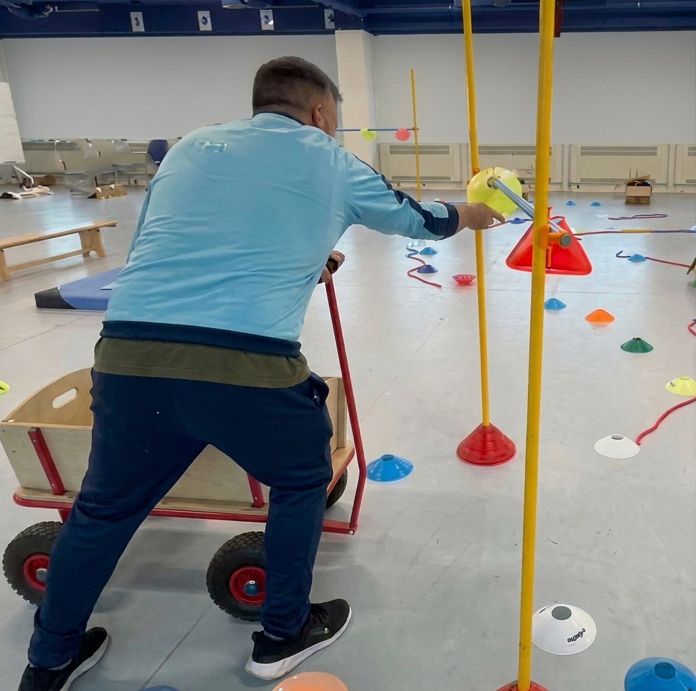
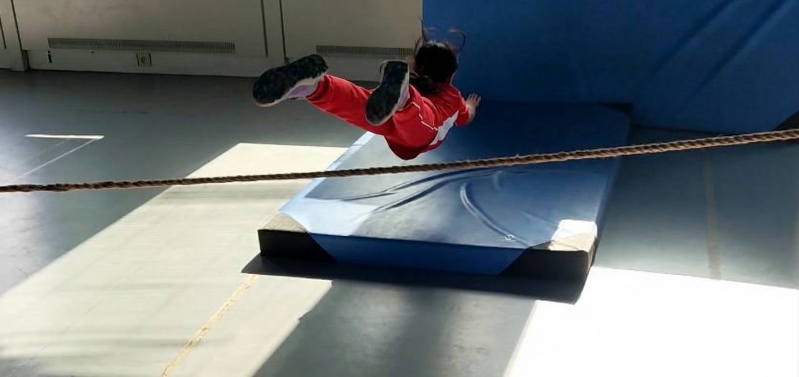
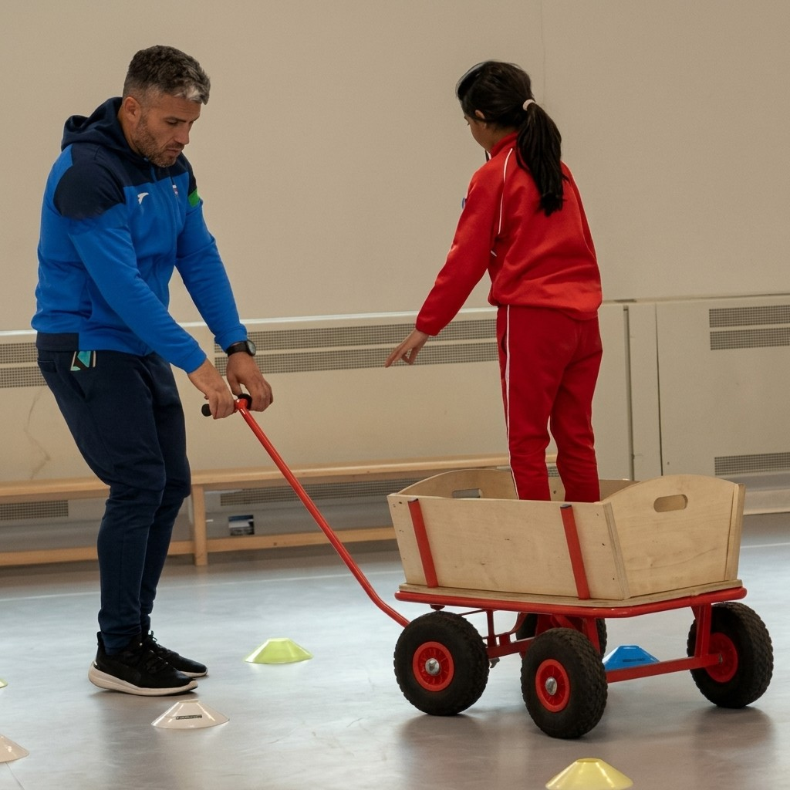
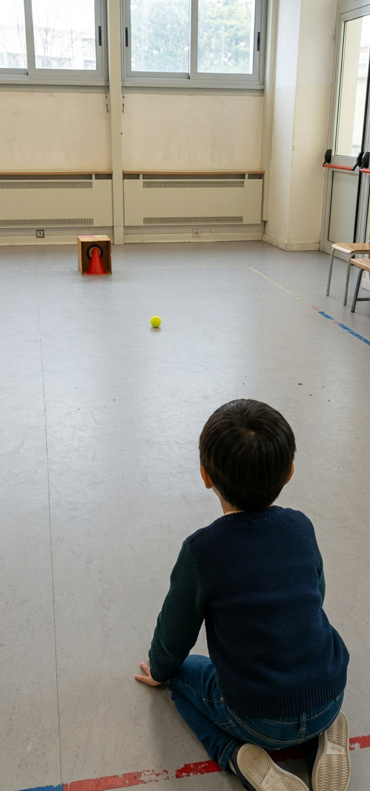

Teamwork & Respect
Cooperation, communication, respect for differences and learning to work towards a shared goal.
Learning through movement. Preparing for life. Physical Education can be much more than exercise: it can help students understand themselves, others and the world around them.

“It's not an important subject...”
One student's question made me reflect on the purpose of Physical Education. Sport is often seen as exercise, competition or simply fun. But movement can also be one of the most powerful educational tools available to us. The gym, playground and sports field can become classrooms for life.
Every activity can create opportunities to develop skills and values that extend far beyond the lesson itself.
Cooperation, communication, respect for differences and learning to work towards a shared goal.
Understanding movement, hydration, food, energy and the importance of healthy everyday choices.
Awareness, road safety, risk assessment and making responsible decisions in different situations.
Honesty, respect for rules, integrity, inclusion and how we behave when winning or losing.
Thinking, adapting, making decisions and finding creative solutions through movement challenges.
Creating meaningful opportunities for every student to participate, contribute and feel valued.
Movement becomes meaningful when students explore, try, adapt, collaborate and discover.

Supporting students while encouraging them to explore, make decisions and build confidence through practical experience.

Creating challenges that develop coordination, awareness, creativity and the ability to adapt to changing situations.
Physical literacy grows through varied experiences—not only through traditional sports, but also through exploration and purposeful movement tasks.
.png)
Activities that invite students to control movement, focus attention, coordinate actions and refine accuracy.
.png)
Using equipment and simple materials to encourage experimentation, problem-solving and collaborative thinking.
The connection doesn't stop when the lesson ends. What students practise in movement can become a way of understanding everyday situations.

Sometimes the most important part of a lesson is the moment we stop, observe, think and decide what to do next. Physical Education can turn movement into understanding—and connect actions with consequences, rules with responsibility, and individual choices with the people around us.
Understanding why shared rules help people live and work together.
Learning that progress often comes through collaboration.
Building awareness of our bodies and healthy habits.
Practising observation, responsibility and safe behaviour.
My goal is not simply to teach students how to perform a physical activity, but to create meaningful learning experiences. Through movement, students can develop physical competence, confidence, resilience, respect, critical thinking, social skills, emotional awareness, independence and a lifelong positive attitude towards activity.
Future reflections connecting Physical Education, sport, values and everyday life.
Exploring the educational value of movement beyond physical skills.
How sporting rules and behaviours connect with integrity and respect.
Connecting physical activity with daily choices and wellbeing.